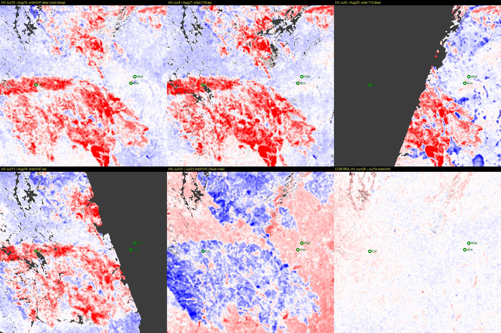

NASA Space Apps Challenge 2026 · Dancing with the SARs
On the night of July 13, 2026, Whitesand First Nation evacuated after being told there was no threat. Smoke hid the ground from satellite cameras. NASA's NISAR radar saw through it, and here is where the forest burned.
Left side: NISAR radar on July 10, before the fire. Right side: August 15, after. Healthy forest looks green. Forest that lost its canopy turns purple grey. Lakes are dark blue.
Click a community for its distance to the burn. Map data © OpenStreetMap contributors. Radar: NISAR provisional data (NASA and ISRO).
Whitesand First Nation's emergency response manager. Evacuation orders for Armstrong and Whitesand came shortly before 10:30 PM on Monday, July 13 [1]. The First Nation says it ordered its evacuation after the province said there was no threat [2]. Nearby, Collins First Nation lost more than 30 homes, a school and community centres [2]. More than 1,800 people were forced from their homes, and First Nations leaders called for a public inquiry [3]. Whitesand paid for hotel rooms and food for its members and its neighbours, without knowing if it would be paid back [4].
To give evidence to the inquiry, claim those costs back, and decide when it is safe to go home, the community needs an independent record of where the fire burned and how close it came. Cameras could not see through the smoke. Radar can.
NISAR sends out microwave pulses about 24 cm long and records the echo. Smoke, cloud and darkness don't block them, so it sees the ground any time.
Part of the echo, called HV, comes from the signal bouncing around inside tree crowns. When crowns burn, HV gets weaker. In burned forest we measured HV about 1.4 dB lower, roughly 28% less echo.
NISAR flies the same path every 12 days, looking from the same angle. We compare matching images from early July (before) and mid August (after), so any difference comes from the ground.
Which radar channel shows the fire? Right after the fire, HH (the echo bouncing straight back off trunks and ground) got slightly brighter, likely from bare trunks and wet ash. Weeks later, HV dropped as burnt needles and branches fell. HV gives the clearest burn map; HH gives the first sign.
Four NISAR orbits, each looking from a different angle, show the same burn pattern. Their change maps match with a score of 0.70 to 0.94, where 1 means identical. As a control, two images from before the fire, compared the same way, show almost no change (0 km² flagged).
Next: compare with NASA FIRMS fire detections and the official fire perimeter.
Next: compare with Ontario's official THU036 fire perimeter.

Open source. Code and analysis: GitHub link coming. Team: names coming.